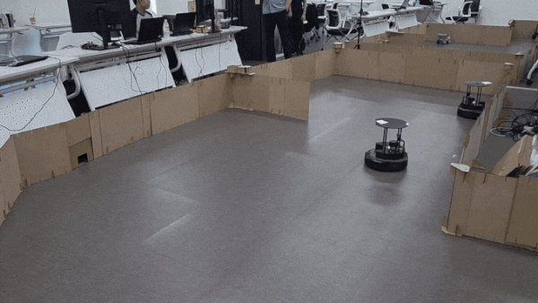
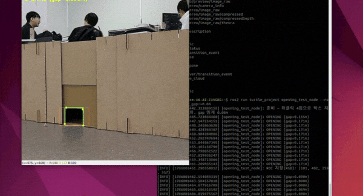
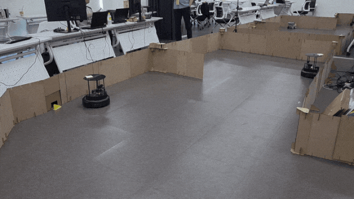
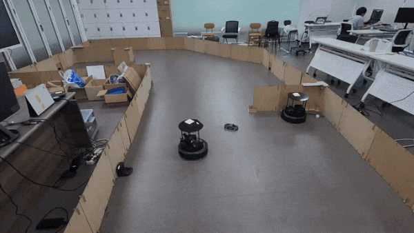

An autonomous pest-monitoring patrol system in which two AMRs take turns patrolling blind spots in warehouses and logistics facilities, detecting and tracking rodents, and reporting their locations and evidence to a monitoring system in real time.
I led the vision pipeline, from converting 2D detection boxes into 3D coordinates the robot can navigate to, to implementing logic that filters out false positives.
The 2D bounding boxes detected by YOLO had to be converted into 3D target coordinates for robot navigation.
I divided the pipeline into four stages: pixel mapping → depth sampling → 3D deprojection → map transformation.
I identified 3D deprojection—the coordinate-frame transition—as the critical stage, separated all four stages into independent functions, and validated them with four self-checks.
The self-checks helped catch errors before deployment, reducing the risk of the robot navigating to the wrong location if any stage was misaligned.

YOLO bounding boxes alone could not distinguish real rodent holes from wall patterns and shadows.
I calculated the depth variation (gap) inside each opening box using p90 minus p10.
An opening was classified as real only when the variation was at least 0.05 m. I expanded the region by 5 cm on both sides and checked again to reduce errors caused by including adjacent walls.
This filtered out flat walls and boxes (gap = 0.00 m) as false positives while correctly identifying real openings.

There was no objective way to determine whether a trap had been placed close enough to an opening.
I repeatedly measured the distance between the opening and the trap to determine an appropriate placement range.
I set 25 cm (ok_dist) as the hole-to-trap distance threshold. The system automatically classifies the placement as trap_ok within the range and trap_bad outside it.
Trap placement suitability is now evaluated automatically using a clear numerical threshold, without human judgment.

There was no defined criterion for determining whether the robot was still tracking a rodent or had lost it.
I tested and defined numerical thresholds for the tracking radius and dwell time.
The system considers tracking successful when the target remains within a 0.3 m radius for 10 seconds. If the target leaves the radius and is still not found after a five-second search rotation, it is marked rat_lost.
Tracking success and loss are now determined automatically using clear numerical criteria, without human intervention.

I supported the coordination flow that turns vision detections into real patrol actions, enabling two AMRs to work together continuously.
When a robot returned to patrol after responding to an event, such as a rodent detection, it restarted from waypoint 0. This caused it to repeat earlier sections while later sections were left uncovered.
I implemented a way to save the waypoint index at the moment an event occurred.
RobotAgent stores the current waypoint index in lap_from and resumes patrol from that point after the event is handled.
By remembering where patrol was interrupted, the robot can cover the entire route without repeatedly revisiting earlier sections.
When a patrolling robot ran low on battery, its area could be left without patrol coverage.
I designed a handoff flow in which a robot returns when its battery reaches a threshold while another robot takes over.
When Robot A returns to the docking station due to low battery, the Central PC selects Robot B, sends a PATROL command, and dispatches it from the dock.
This minimizes patrol gaps and maintains coverage while the robots switch roles.